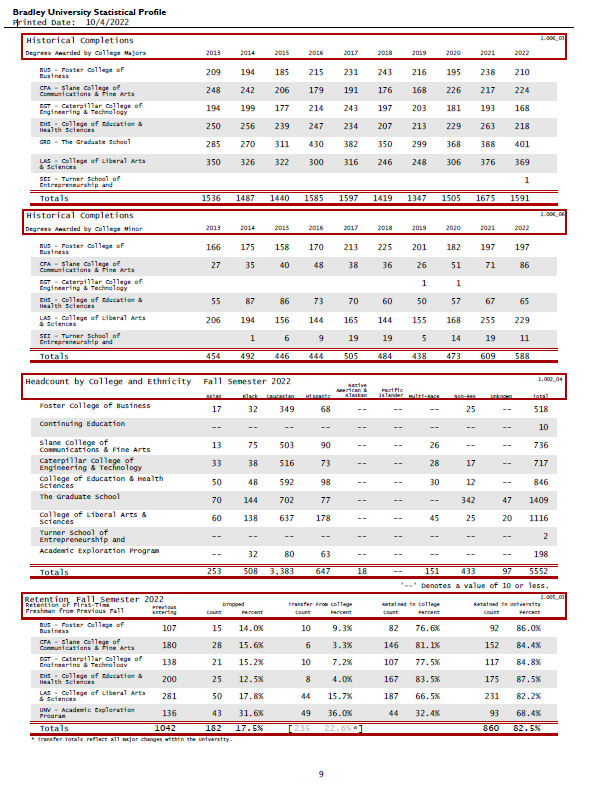
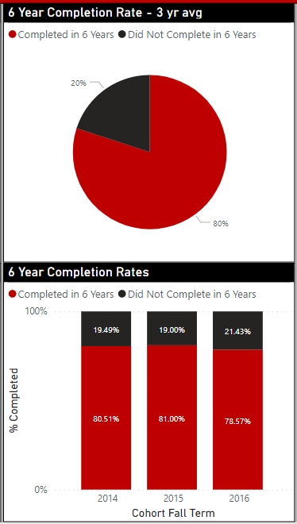
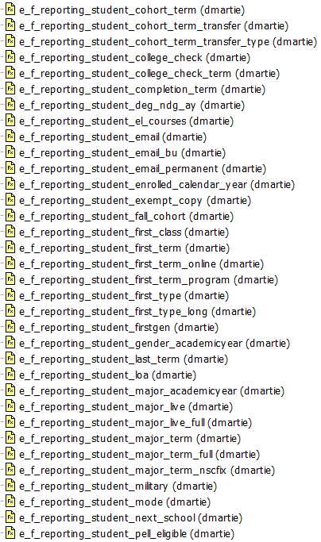

Showcase
Family
Of my accomplishments, my family is the greatest. My wife and 3 kids are the best thing to happen to me. Each of them is kind, successful, and wonderful to be around.
Work
I've been involved in a number of interesting projects since coming to Bradley in 2011.
The Statistical Profile is a yearly report on our students. Inside you will find data about major and minor enrollment, completions, and demographic data on our student population. The Statistical Profile can be found on the Registrar's webpage. I am responsible for Section A.

Since first coming to Bradley, I've been working towards visualized reporting methods. We started with a product called idashboards, implementing it my first week here. I created many visual reports in idashboards, before it was eventually dropped in favor of TADA. I worked with TADA to create a living version of our Statistical Profile. Again, ultimately, TADA was dropped in favor of Microsoft PowerBI. PowerBI is my favorite visualization tool yet, and I hope we are able to stick with it. I've been working with several groups, including the Office of Diversity, Equity, and Inclusion, the Retention Committee, The College of Education and Health Sciences, and Student Affairs, to create important and informative visualizations of our data.

One of the things I've worked on in the background here at Bradley, is improving our data capabilities. I've accomplished much of this by defining difficult data elements in the database as functions. To date, I've created over 2000 data definition functions, and I create more nearly every week.

Fun
My best accomplishment in the fun category is owning and driving my 455 wheel horsepower Subaru STi. It's fast, and mean, and very rewarding to drive properly. I enjoy driving on backroads and taking it to car meets.